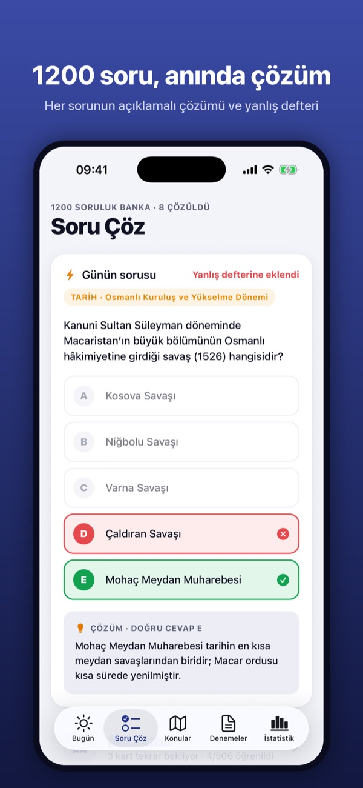
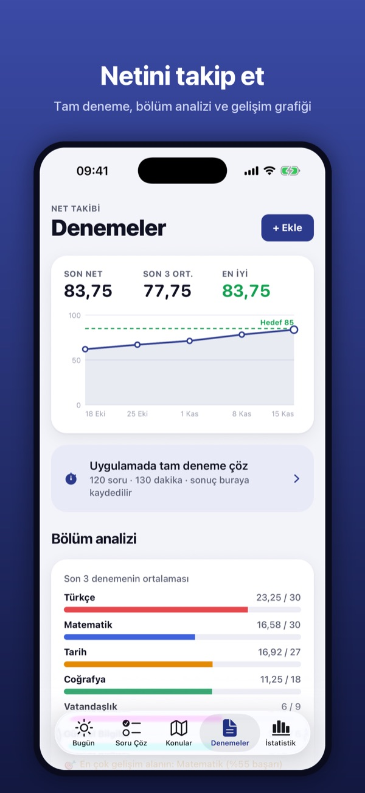
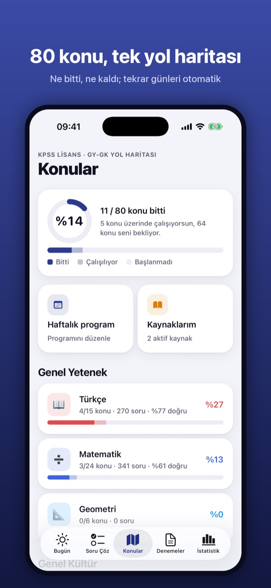
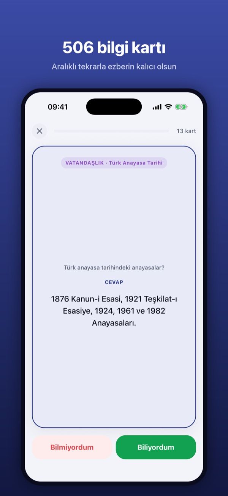
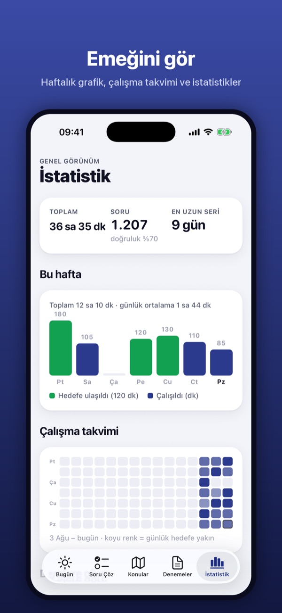

KPSS hazırlığında ihtiyacın olan her şey
Dağınık PDF’ler, kaybolan deneme sonuçları, “bugün ne çalışsam” derdi yok. KPSS Rota hepsini tek yerde toplar.
KPSS soru bankası
Türkçe, Matematik, Geometri, Tarih, Coğrafya, Vatandaşlık ve Güncel Bilgiler’den 1200 özgün soru. Her sorunun açıklamalı çözümü var.
KPSS deneme sınavı
120 soru, 130 dakika. Gerçek sınavdaki soru dağılımıyla prova yap, netin kaydedilsin.
KPSS çalışma programı
80 konunun durumunu gör. Tekrar zamanı gelen konular sana kendiliğinden hatırlatılır.
Günlük plan
Bugün neyi tekrar edeceğin, neye devam edeceğin ve hangi konuya başlayacağın hazır.
506 bilgi kartı
Tarih, coğrafya, vatandaşlık… Kartı çevir, bildiğini işaretle, eksiğini tekrar et.
Net takibi
Dışarıda çözdüğün denemelerin netlerini gir, gelişimini grafikte izle, zayıf konularını gör.
KPSS rehberleri
Uygulamayı indirmeden önce de işine yarayacak ücretsiz kaynaklar.
KPSS konuları ve soru dağılımı
Genel Yetenek ve Genel Kültür’ün 80 konusu, derslere göre soru sayıları.
KPSS çalışma programı
Kalan süreye göre haftalık program nasıl kurulur, örnek bir hafta.
KPSS net hesaplama
Doğru ve yanlış sayını gir, ders ders netini anında hesapla.
KPSS deneme rehberi
Deneme ne sıklıkla çözülür, süre nasıl yönetilir, sonuç nasıl analiz edilir.
KPSS Tarih soruları
12 konu, çalışma taktikleri ve çözümlü örnek sorular.
KPSS Türkçe soruları
Paragraf, dil bilgisi ve sözel mantık; çözümlü örnekler.
Ders ders çözümlü örnek sorular: Türkçe · Matematik ve Geometri · Tarih · Coğrafya · Vatandaşlık · Güncel Bilgiler
Uygulamadan görüntüler
Kaydırarak göz at.





Ücretsiz başla, istersen Premium’a geç
Ücretsiz sürümle uygulamayı gerçekten dene. Beğenirsen tüm içeriği Premium ile aç.
Ücretsiz
Sonsuza kadar ücretsiz
- Her konudan ilk 5 soru
- Her konudan 3 bilgi kartı
- 1 mini deneme
- Yol haritası, günlük plan ve hatırlatıcı
- Deneme takibi ve istatistik
Premium
Aylık, yıllık ya da tek ödeme
- 1200 sorunun tamamı
- Tam deneme ve sınırsız mini deneme
- Yanlış defteri
- 506 bilgi kartının tamamı
- Zayıf konu analizi
Sık sorulanlar
KPSS Rota ücretsiz mi?
Evet, ücretsiz indirip kullanabilirsin. Yol haritası, günlük plan, deneme takibi ve her konudan örnek sorular ücretsizdir. 1200 sorunun tamamı, 120 soruluk tam deneme ve yanlış defteri Premium’dadır.
KPSS Rota hangi konuları kapsıyor?
KPSS Genel Yetenek (Türkçe, Matematik, Geometri) ve Genel Kültür (Tarih, Coğrafya, Vatandaşlık, Güncel Bilgiler) olmak üzere 80 konu. Konu listesinin tamamı KPSS konuları sayfasında.
Lisans, ön lisans ve ortaöğretim adayları kullanabilir mi?
Evet. Genel Yetenek ve Genel Kültür konuları üç düzeyde de aynı derslerden oluşur. Tam deneme lisans düzenindedir: 120 soru, 130 dakika.
Android sürümü var mı?
Google Play sürümü çok yakında yayında. Şimdilik iPhone ve iPad için App Store’dan indirebilirsin.
Hesap açmam gerekiyor mu?
Hayır. Çalışma verilerin yalnızca cihazında saklanır. Ayrıntılar için Gizlilik Politikası.
Premium aboneliği nasıl iptal ederim?
App Store hesap ayarlarındaki Abonelikler bölümünden istediğin zaman iptal edebilirsin.
KPSS’ye bugün başla
80 konuluk yol haritası, 1200 çözümlü soru ve tam deneme cebinde. Hesap gerekmez.
KPSS Rota bağımsız bir çalışma uygulamasıdır; ÖSYM ya da herhangi bir kamu kurumuyla bağlantısı yoktur. Sorular özgün olarak hazırlanmıştır. Sınav tarihleri, başvuru koşulları ve kuralları için resmî kaynak: osym.gov.tr